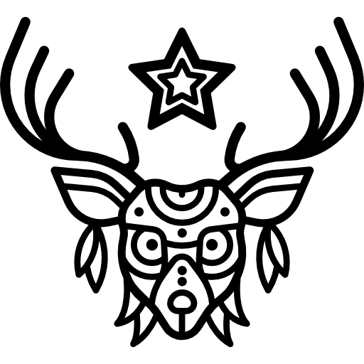

Oso
Símbolo para el guerrero y el poder
El oso es significado de valentía, paz, resurrección, poder, benevolencia, soberanía, maternidad, paciencia e introspección, Aunque el oso es omnívoro, el oso prefiere una dieta sencilla con aperitivos dulces como bayas. Además, al oso le gusta tumbarse en los lugares soleados en su tiempo libre.

Venado
Sobrevivir, y evitar la destrucción indiscriminada de la vida
El antílope significa acción conocimiento. Desde la tundra a la sabana o praderas de desierto, el antílope sobrevive en casi cualquier entorno, gracias a su poderoso instinto. Para las personas Auto seguras y no tan emocionalmente vulnerables, La confianza en sí mismo y la capacidad de acción es una lección de antílope.

Lince
El lince está en tu puerta, escúchalo.
La medicina del lince habla de clarividencia de forma concreta. Tendrás imágenes mentales de personas y verás lo que han escondido, o ellos o los demás. Serás capaz de ver sus miedos, mentiras y como se autoengañan. Mantente alerta y presta atención a lo que se te va a revelar, a través de visiones o de voces internas. Puede que aparezcan presagios, la Madre Tierra te ha señalado de alguna manera especial.

Búho
Sigilo, Secreto.
Vista aguda. Movimiento rápido y silencioso. Sabiduría. búho posee la valentía de seguir sus instintos. Es símbolo de misticismo, sabiduría y misterio, ante todo.
Lobo
Libertad La imagen del lobo salvaje aullando a la luna es un símbolo de libertad
Los lobos son el símbolo de la resistencia y el aguante físico. Pueden correr 35 kilómetros diarios en busca de presas. Son animales muy incomprendidos, que se han ganado la reputación de ser malvados y de sangre fría. En realidad, los lobos son criaturas amistosas y sociales.